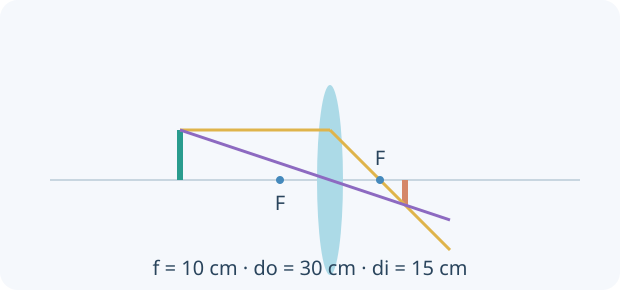

Una idea, un modelo y una experiencia para contrastarlo. Comprobá cada explicación y volvé a intentarlo cuando lo necesites.
0 de 4 lecciones comprobadasAvance guardado en este navegador
Contenidos y correspondencia con el programa
Reflexión, espejos planos/esféricos y formación de imágenes
Refracción, Snell y reflexión total interna
Lentes convergentes/divergentes y ecuación de lentes
Prisma, dispersión, lupa, microscopio, telescopio y polarización
Normas OAF 2022, programa esquemático y contenidos conceptuales/procedimentales, pp. 15–17. Ver fuente y alcance.
01
COMPRENDÉ Y COMPROBÁ
Tu ruta de estudio.
LECCIÓN 1 / 4 · LEÉ, APLICÁ Y COMPROBÁ
Reflexión y rayos que forman una imagen
Empezá desde la idea.
Los rayos indican direcciones de propagación en un modelo geométrico. Para reflexión, medí ángulos desde la normal a la superficie. La posición de una imagen se obtiene siguiendo rayos o sus prolongaciones; no se decide por dónde imaginás que debería estar el objeto.

Lente convergente ideal: imagen real, invertida y de la mitad de altura. Rayos y distancias del ejemplo comparten una escala.
La reflexión especular conserva el ángulo respecto de la normal: i = r. Un espejo plano produce imagen virtual detrás del espejo a igual distancia que el objeto delante. «Virtual» describe cómo convergen prolongaciones, no una imagen imaginaria sin efectos visuales.
En espejos curvos, una aproximación paraxial relaciona foco, objeto e imagen. Rayos principales ayudan a construirla, pero no son los únicos rayos que existen. El ojo recibe rayos reflejados reales y los interpreta como procedentes de la posición virtual.
Tu desafío: Ubicá objeto e imagen y explicá por qué una pantalla detrás del espejo no captura esa imagen.
Ver el ejemplo resuelto paso a paso
Su imagen está 2 m detrás.
La separación objeto–imagen es 4 m.
LECCIÓN 2 / 4 · LEÉ, APLICÁ Y COMPROBÁ
Refracción y reflexión total
Empezá desde la idea.
Al cruzar una frontera, la frecuencia de la luz se mantiene en un medio estacionario, pero pueden cambiar rapidez y longitud de onda. La desviación depende del ángulo de incidencia. La reflexión total requiere ciertas condiciones, no cualquier paso de un medio a otro.
Al cruzar una interfaz, la luz puede cambiar rapidez y dirección según índices de refracción. La frecuencia se conserva al atravesar una interfaz estacionaria; la longitud de onda puede cambiar. Snell relaciona ángulos respecto de la normal.
La reflexión total interna requiere viajar desde mayor n hacia menor n y superar un ángulo crítico. No aparece al ir de aire a vidrio en la interfaz usual. La rapidez de fase en un medio simple es c/n; no confundas menor rapidez con menor frecuencia necesariamente.
n₁ sinθ₁ = n₂ sinθ₂ · sinθc = n₂/n₁ si n₁ > n₂
INTENTÁ RESOLVER ANTES DE MIRAR
De vidrio n₁ = 1,50 hacia aire n₂ = 1,00.
Tu desafío: Calculá el ángulo crítico y explicá por qué exige ese orden de medios.
Ver el ejemplo resuelto paso a paso
sinθc = 1/1,50.
θc ≈ 41,8°; por encima puede haber reflexión total interna.
LECCIÓN 3 / 4 · LEÉ, APLICÁ Y COMPROBÁ
Lentes y aumento
Empezá desde la idea.
Una lente desvía rayos y puede formar imágenes reales o virtuales según tipo y ubicación del objeto. Una pantalla solo captura una imagen real formada por convergencia de luz. El aumento tiene magnitud y signo: tamaño y orientación aportan información distinta.
Para lentes delgadas y rayos paraxiales usamos 1/f = 1/do + 1/di. Con objeto real, do > 0; lente convergente f > 0 y divergente f < 0. Imagen real tiene di > 0 en esta convención y puede capturarse en pantalla.
El aumento transversal m = −di/do indica tamaño relativo y orientación. En una convergente, un objeto dentro del foco produce imagen virtual y derecha; fuera del foco puede dar real e invertida. No uses la ecuación exactamente en do = f esperando una imagen a distancia finita.
di = f do/(do − f) · m = −di/do
INTENTÁ RESOLVER ANTES DE MIRAR
f = +10 cm y do = 30 cm.
Tu desafío: Calculá distancia, tipo, orientación y tamaño relativo de la imagen.
Ver el ejemplo resuelto paso a paso
di = 10×30/(30 − 10) = 15 cm.
m = −0,5: imagen real, invertida y de mitad de altura.
LECCIÓN 4 / 4 · LEÉ, APLICÁ Y COMPROBÁ
Prismas, instrumentos y polarización
Empezá desde la idea.
La luz blanca incluye frecuencias diferentes. La dispersión permite separarlas porque el índice puede depender de la frecuencia. La polarización describe otra propiedad y no es sinónimo de color. Un instrumento combina elementos ópticos con funciones específicas.
La dispersión ocurre porque n depende de la frecuencia: un prisma desvía componentes de luz blanca en ángulos distintos. Un filtro de color y un polarizador no realizan la misma selección. La polarización describe orientación del campo de una onda transversal.
Una lupa usa una lente para producir una imagen angularmente ampliada bajo condiciones adecuadas. Microscopios y telescopios combinan elementos con funciones distintas; aumento no equivale a resolución. La difracción limita distinguir detalles aunque una imagen se agrande mucho.
Polarizadores ideales: I = I₀ cos²θ para luz inicialmente polarizada
INTENTÁ RESOLVER ANTES DE MIRAR
Luz linealmente polarizada atraviesa un analizador a 60°.
Tu desafío: Calculá la fracción transmitida y distinguí polarización de dispersión de colores.
Ver el ejemplo resuelto paso a paso
I/I₀ = cos²60°.
La intensidad transmitida es 1/4 de la inicial.
02
PREDECÍ · ARMÁ · MEDÍ · EXPLICÁ
La física en tus manos.
Preparando el laboratorio virtual…
03
LISTO PARA PONER A PRUEBA TU COMPRENSIÓN
Practicá, revisá y volvé a la idea.
Ocho preguntas por unidad, con áreas y niveles seleccionables. La autoevaluación avanza al guardar; al final podés revisar explicaciones y reintentar errores. Es práctica local, no un examen oficial ni un envío al panel docente.